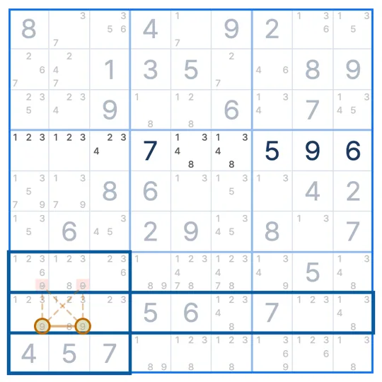

SUDOKU TECHNIQUE · 기초 기법 · 교차로
클레이밍
교차로 · Claiming · 박스/줄 감소
클레이밍(교차로, Claiming)은 한 줄에서 어떤 숫자의 후보가 한 박스 안에만 있을 때, 그 박스의 다른 칸에서 그 숫자를 지우는 스도쿠 기법이에요.
- 보는 숫자
- 한 종류
- 필요한 곳
- 줄 1개와 그 줄이 지나는 박스
- 지우는 곳
- 줄 밖 같은 박스
클레이밍 모양
숫자 6만 본 그림이에요. 5행에서 6이 갈 수 있는 칸은 5행 4열과 5행 6열, 모두 5번 박스 안에 있어요.
5행의 6 후보 (5번 박스 안)
6을 지울 수 있는 칸
영향 없는 6 후보
왜 지울 수 있나요?
5행에는 6이 반드시 하나 들어가야 하고, 갈 곳은 5번 박스 안의 두 칸뿐이에요. 그러니 5번 박스의 6은 5행에 들어가요.
박스에 6은 하나뿐이니, 5번 박스의 다른 칸(4행 5열, 6행 4열)에는 6이 들어갈 수 없어요. 그래서 그 칸들의 6 후보를 지워요.
클레이밍 찾는 순서
- 행이나 열 하나와 숫자 하나를 정해요.
- 그 줄의 후보가 모두 한 박스 안에 있는지 봐요.
- 그렇다면 그 박스의 줄 밖 칸에서 그 숫자를 지워요.
자주 헷갈리는 점
포인팅과 뭐가 달라요?
포인팅은 박스에서 시작해 줄에서 지우고, 클레이밍은 줄에서 시작해 박스에서 지워요.
왜 박스/줄 감소라고도 하나요?
영어 이름 Box/Line Reduction을 옮긴 말이에요. 줄이 박스의 후보를 줄여 준다는 뜻이에요.
열에서도 되나요?
네. 한 열의 후보가 모두 한 박스 안에 있으면, 그 박스의 다른 칸에서 지워요.
비슷한 기법
스도쿠 리그 앱에서
막히면 힌트가 클레이밍을 보여줘요
풀다가 막혀 힌트를 누르면, 줄의 후보와 박스에서 지울 칸을 보드 위에 표시해 줘요. 기법 연습에서는 실제 문제 위에서 클레이밍 수업을 들을 수 있어요. 첫 판에서 모양과 이유를 같이 보고, 다음 판에서는 직접 찾아봐요.
